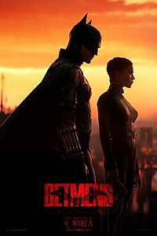

Betmens (2022. gada filma)

"Betmens" angļu: The Batman ir 2022. gada ASV supervaroņu filma, kas balstīta uz DC Comics tēlu Betmenu. Tā ir jauna sadaļa Warner Bros. veidotajā "Betmena" filmu sērijā.
Filmas režisors un viens no scenāristiem ir Mets Rīvss, otrs scenārists ir Pīters Kreigs. Galveno lomu, Brūsus Veinu/Betmenu, atveido Roberts Patinsons, pārējās lomas atveido Zoja Kravica, Pols Deino, Džefrijs Raits, Džons Turturo, Pīters Sārsgārds, Endijs Serkiss un Kolins Ferels. Filmas sižets stāsta par galvenā varoņa otro gadu kopš viņš uzsācis cīnīties ar noziedzības apkarošanu, kā Betmens atklāj korupciju Gotemas pilsētā un vajā Ridleru (Deino), sērijveida slepkavu, kas kā savu mērķi izvēlējies Gotemas eliti.Filmas režisors un viens no scenāristiem ir Mets Rīvss, otrs scenārists ir Pīters Kreigs. Galveno lomu, Brūsus Veinu/Betmenu, atveido Roberts Patinsons, pārējās lomas atveido Zoja Kravica, Pols Deino, Džefrijs Raits, Džons Turturo, Pīters Sārsgārds, Endijs Serkiss un Kolins Ferels. Filmas sižets stāsta par galvenā varoņa otro gadu kopš viņš uzsācis cīnīties ar noziedzības apkarošanu, kā Betmens atklāj korupciju Gotemas pilsētā un vajā Ridleru (Deino), sērijveida slepkavu, kas kā savu mērķi izvēlējies Gotemas eliti.